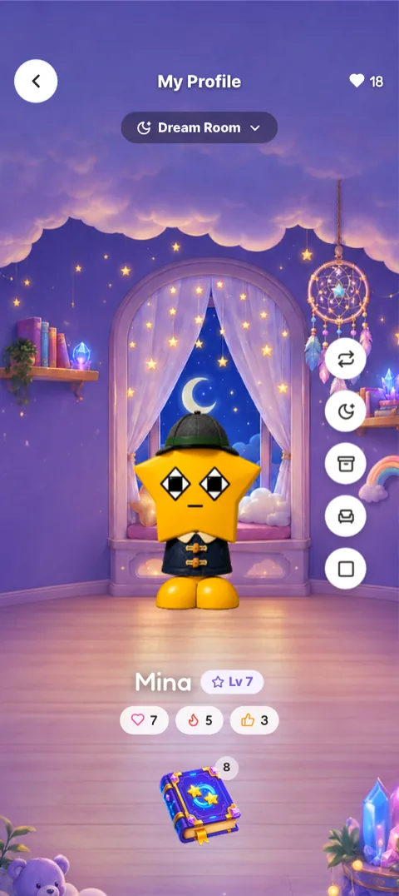
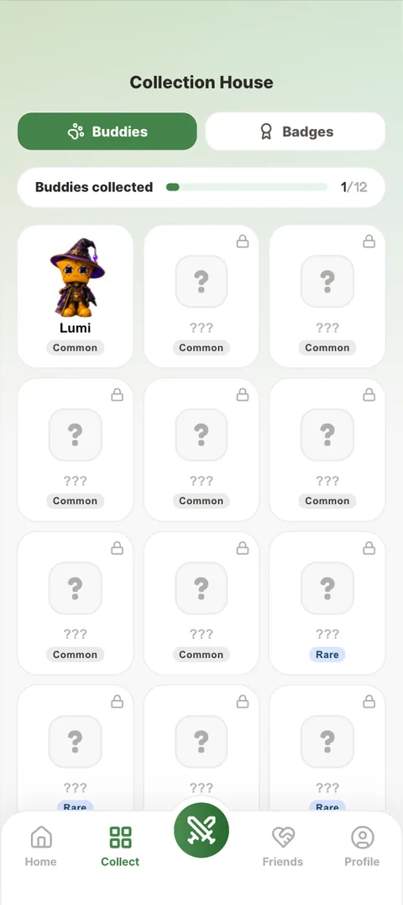
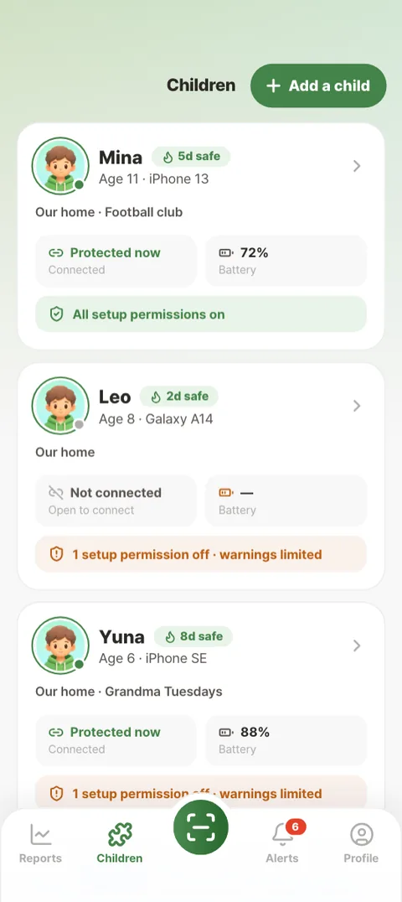

A walking-safety game for children and a calm weekly report for the adults who look after them. This is how the main decisions were made, and what is still unproven.
Screens captured from the running prototype. All numbers on them are sample data.
In one paragraph
Children in Korea walk to school looking at their phones. The usual fixes are to lock the phone, schedule it off, or track the child, and children learn to work around all three. JoanX tries the opposite. The phone notices when a child is walking and using the screen at the same time, gives one gentle buzz, and only steps in further if the child keeps going. Walking with the phone put away earns points, eggs, a growing buddy and villain battles. Parents get a weekly picture of whether the habit is improving, plus an alert if a fall is detected. They never see location, messages, photos or which apps the child uses.
Product
Two apps from one codebase: a game for the child, a dashboard for guardians. A marketing website in English, Korean and Mongolian.
Client
Joan Company, which owns the character IP and wrote the functional spec (revision of 18 June 2026) Confirmed
Audience
Children of primary-school age, and the parents or other guardians who install it. Age range conflicts The docs say 6–13 in one place and 7–12 in another; the spec gives no age.
My role
Product and UX design and the full front-end build of both apps: information architecture, the design system, every screen, the reward rules and the documentation. I worked with an AI pair programmer (Claude), credited on most commits. Confirm wording
Others
Myt H Mon contributed the 17-cut onboarding story (commit c3aea8c). The client approves character names, story and art.
Status
A spec-complete clickable prototype with sample data. No backend, no store release, no user testing yet.
Timeline
5 June – 2 October 2026, 328 commits, with two quiet gaps (10–28 June, 9–14 September).
Confirmed in the repo, spec or buildInterpretation my reading, to confirmGap missing or conflicting
Chapter 2
The problem
Why the usual answers fail
The project documents frame the problem as 스몸비 ("smombie"): children using a phone while walking near roads. Existing tools treat it as a control problem. They block the screen, lock it on a schedule, or track where the child is. The design docs argue that these approaches are punitive, that children defeat them, and that tracking costs trust between parent and child. Reasoned, not researched These are design risks taken from the brief and the docs, not observed findings. No interviews or field study exist in the materials.
The product bet
Make walking with the phone put away the thing that wins the game.
Instead of taking the phone away, JoanX makes the safe behaviour pay inside a game the child already cares about. The parent's view stays deliberately narrow, so the product can't turn into surveillance.
Constraints that shaped every screen
Constraint
Source
What it forced
Never lock the screen
F-10 excluded; data.jsx comment
Every intervention has to persuade. None of them can block.
Calls and texts always work
F-27
Safety tools can never cut the child off from their family.
Detection is a guess
F-03, F-04, F-30 (90% accuracy is a target)
A false alarm must cost the child very little, so the first signal is one buzz.
No location, no message reading
F-05/F-06 excluded; PARENT_SEES
The parent report can only describe behaviour, never place or content.
Android first, client-owned characters
Spec; client approval of IP
Character art and names change at the client's pace; the UI had to survive art swaps.
How success was defined
The spec sets the measures the guardian is meant to care about: a reduction rate in risky moments against the child's own earlier behaviour, how often warnings are accepted, and growth in safe walking time (F-20). Detection accuracy has a target of 90% or more during a tuning period (F-30). None of these have been measured yet, because there is no live data.
Chapter 3
Understanding the system
There was no user research to start from, so understanding came from the spec and from building it. I turned 40-odd numbered requirements into rules in code, and those rules are where most of the design problems surfaced. This chapter maps the structure those decisions sit in.
CollectBuddies and rooms, badges, buddy detail and outfits, the character book
⚔ Centre: villain roadTen villains in order, then battle: pick a fighter, versus, result
FriendsFriends list, visit a friend's room, leave a guestbook note. No chat.
ProfileMy room and decorating, settings, help
Outside the tabsOnboarding story, the safety moment, the fall check
Parent app · 4 tabs + centre button
ReportsWeekly picture per child, response to warnings, AI summary
ChildrenDevice status, rules and settings per child, add a child
Centre: connectPair a child's phone by code or QR
AlertsSafety and progress feed, urgent fall alerts, join requests
ProfileAccount, guardian groups, help
The core loop: the safety moment
Everything in the product hangs off one sequence. It is a rule engine more than a screen, so I mapped it first.
Drawn from the rules in data.jsx (INTERVENTION, POINTS, SAFE_STOP) and spec F-04 to F-12. A stop pays only when four signals hold: a warning was shown, phone use stopped, the screen turned off, and walking continued. Paid stops have a 60-second cooldown and a 300-point daily cap.
What a safe walk is worth
Behaviour
Reward
Rule
Each full minute of phone-down walking
10 pt
Under one minute earns nothing
Stopping before any warning appears
+50 pt
Verified by four signals
Stopping after the warning
+20 pt
Same verification, lower tier
A day with no ignored warnings
+100 pt
Streaks add +300 at 7 days, +700 at 14, an Epic egg at 30
Spend: eggs, XP, outfits
500 / 1,500 pt
Common and Rare eggs; 5 points buy 1 XP
Points are the only currency. Five battles a day against a ladder of ten villains turn the buddy's growth into something the child can use. Sources disagree One checklist says one battle a day; the spec and the code say five.
The parent's view has a hard edge
Parents see
How long the child walked safely
Warnings while walking
Points and streak
Whether protection is on
Nobody sees
Where the child is
Messages and guestbook notes
Photos
Which apps the child uses
This list is a single data structure (PARENT_SEES) that both apps render. The child sees the same list on their own phone, so the promise is visible to the person it protects. A code comment states the rule: "breaking one means editing this list, in the open."
Chapter 4
Key design decisions
Four decisions carried the most weight. Each follows the same shape: what the person was trying to do, what made it hard, what evidence pointed at the problem, and what changed.
A. Interrupting a child without punishing them
Goal
The child wants to keep walking and doing whatever they were doing. The product wants them to put the phone away, and to choose it.
Risk
A hard interruption gets dismissed or resented, and detection can be wrong. A loud alarm for a false positive teaches the child to ignore the app.
Evidence
The spec's ladder (F-08, F-09) and a series of fixes found by building and running it. Five problems are recorded in commits (below). No child has used it yet.
Constraint
No screen lock (F-10). The message must fill about 20% of the screen (F-09). Calls and texts are never blocked.
Alternatives
Seven warning layouts (Spotlight, Card, Frame, Signal, Strip, Sheet, Banner) and two narrators. All are still switchable in the prototype. Spotlight and King Cubix are the defaults.
The escalation runs in steps that each cost the child a little more attention: one buzz, a two-second wait, a card, then a message whose tone grows firmer. Most of the design work was making each step readable and fair:
The message vanished before it could be read."It faded the whole sheet — mascot, copy and both buttons — on the message cycle, so a line was gone in 1.5s and the safety CTA went with it." The sheet now holds while the risk lasts and only the words cross-fade (791ef69). The hold was later lengthened to 4 seconds. Not signed off That differs from the spec's 1.5 s, and no client approval is recorded.
Dismiss looked like the safe action. The dismiss pill was the same colour as its backdrop and read as bare text, and it should not look equal to stopping: "it acknowledges the warning, it does not end the risk" (2aa2e6e).
The reward was a second interruption. A celebration pop-up after the child stopped was removed: "The modal was a second interruption tacked onto the one we had just resolved." Points still bank silently (35b6881).
The words were ambiguous. "I looked up" also means looking something up in a list, so the copy moved away from it (46c123f). The Korean side got the opposite fix: adult words like 방명록 and 반영됐어요 were replaced with words an 11-year-old uses.
The scolding voice. In September the warnings switched from the child's own buddy to King Cubix, a narrator character with a pose for each tone (0c7ebf5). Permission requests followed because "permissions are the app's safety voice, not the pet's" (5a2799e). Interpretation For the warnings, no reason is recorded. My reading is the same one: the buddy stays a friend and never scolds. This conflicts with spec F-08.5, which expects the child's character to speak, and needs your confirmation.
1 · Buzz. One vibration. The screen stays usable, so a false alarm costs almost nothing.2 · Card. Only if the risk is still there two seconds later. One action, no competing button.3 · Message. The firmer tone of round two. The app stays usable underneath.
Real alternatives, still in the build
Narrator: buddy. The child's own Lumi delivers the warning. Kept as an option.Narrator: King Cubix. The default since 2 September.Layout: Banner. The lightest of the seven layouts. It leaves the screen almost untouched.
What remains uncertain. Whether a child reads and acts on the card inside two seconds, whether three rounds is too many, and how often the buzz fires falsely. These need the field tuning period the spec plans (F-30) and a test with children.
B. Paying for safety, not for taps
Goal
The child wants points to grow their buddy. The guardian is paying for a real change in behaviour.
Risk
If points land when a button is pressed, the child can learn the loop "trigger, tap, earn" and farm it. The parent's acceptance number would then measure button presses.
Evidence
Found while building the rule engine: the bonus landed the moment the child pressed the button. The design doc names it directly: "The product was paying for a tap, and calling it safety."
Decision
Pay only when four signals hold, and pay more for stopping before any warning (+50) than after one (+20). Add a 60-second cooldown and a 300-point daily cap (69504ff, 20 July).
The tiering is the subtle part. Paying the "warning, then stop" loop as much as never needing a warning would teach a child to earn a warning. The code comment states it plainly: "Never reward the warning→stop loop as much as never needing the warning."
Two earlier changes kept the economy legible. A second invented currency ("coins") was folded into points to match the spec (a06fc2c, 30 June). And gold was reserved for points and XP alone. On 1 September the buddy's Add-XP button went through thirteen versions in one day, from solid gold to outline to no colour, and ended as a green fill, because "the buddy's individual color (e.g. Munch's orange) could clash" (ef32279).
Gold means points. Gold appears only on the XP bar and the cost. The action is green.What points are for. A first win against a villain pays 120 points and 60 XP.The villain road. Ten villains in order, five tries a day, closed while the child is walking.
What remains uncertain. The point values are guesses that the code makes server-configurable on purpose. Whether children notice the 50/20 difference, and whether it changes behaviour, needs data. Sources disagree The spec's flat +20 bonus and the built 50/20 tiers are both in the documents.
C. Giving parents confidence without surveillance
Goal
A guardian wants to know if their child is safer, and to hear at once if something serious happens.
Risk
A report that shows too much becomes tracking. A feed where every row looks the same can bury the one alert that matters.
Evidence
Three problems recorded in commits, each found by running the prototype's own flows: the alerts feed, the family model, and a privacy row that wasn't true.
The urgent alert looked like every other row."An impact alert — a possible fall, no response for twenty seconds — read exactly like a scroll warning three rows down, and its message was clipped at 'please check right a...'." The child's mascot on each row "blunted the one signal that had to survive a glance." Urgent rows now get a red rule and title and a call link in the row itself, and the tab shows an unread count (ce71daa, 21 September).
The family model couldn't hold real families. In July, a second parent had to re-scan the child's phone, which unlinked the first device. Two equal parents fixed that (791ef69). By September the two-parent family was the limit: "The people who actually share a school run — an aunt, a grandparent, a neighbour on Tuesdays — could not be expressed at all." Groups replaced it. A guardian can belong to several groups, joins by QR and needs an admin's approval. The child's phone is never touched (ef672b4). The Korean label is 그룹, not 가족, because the people in one are often not a family.
The fall check asks the child first. Impact detection is a guess, so the child sees "Are you okay?" with a 20-second countdown before anyone is told. "I'm okay" ends it with no alert.
Child first. The child can cancel before a parent is alerted.Urgent stands apart. Severity carries the row; the call is one tap away.Groups, not one family. "Grandma Tuesdays" is the case the old model couldn't express.Behaviour, not place. The report counts stops and ignored warnings against last week.
Asset needed: a screenshot of the alerts feed before 21 September, if you kept one. Without it, this stays a described change, not a before/after.
D. Saying only what the product does
Goal
A parent deciding whether to install the app needs to believe what it promises about privacy and behaviour.
Risk
Marketing copy drifts ahead of the product. For a safety app, one false promise undoes the trust the privacy list is meant to build.
Evidence
An audit of the website and store copy against the running prototype (25 September), a correction to the privacy list (18 September), and a copy pass on "look up" (1 October).
The audit found seven kinds of false promise: "no location data at all, a single buzz that never repeats, pairing by scanning a code, groups with no codes, points that unlock villains, reports measured against the child's first week, and a privacy list shown on the child's profile." Each line was rewritten to match the build in English and Korean (e4e1db6).
The privacy list itself had a row that was never true: "The 'Which app types are blocked' row was never true of the shipped app: blocking only exists in Lite mode." It became "Whether protection is on", and "Which apps you use" moved to the list nobody sees (9671f64). Finally, the website said "look up" throughout, which implies the phone can tell where a child is looking. It can't; it senses walking and screen use. The copy now says "put the phone away" (1a29014).
Still inconsistent in the prototype. The child's help screen still answers "Why did my screen lock?" with "JoanX locks the screen…", and some help text mentions location in Smart mode. I'm presenting these as open work, not hiding them.
Chapter 5
Iteration and refinement
The real process was not linear. It moved in bursts, and most iteration happened by building alternatives side by side and switching between them live in the prototype's Tweaks panel. The panel holds about 50 groups of switches, most of them design alternatives: for example 11 parent report layouts, 10 battle layouts and 7 warning styles.
What actually happened, by date
Dates (2026)
Commits
Focus
5–9 Jun
64
First prototype, colour tokens, type weights, character line experiments
29 Jun–1 Jul
7
First spec-alignment pass: one currency
6–10 Jul
26
Onboarding and pairing, parent sign-in, first staged warning, layout explorations
13–17 Jul
21
Spec-numbered warning rules, tone tiers, field family, flat UI
Warning layout options, fall alert, outfits, client art line
1–8 Sep
25
Add-XP button, King Cubix narrator, room decorating, 17-cut onboarding story
15–21 Sep
16
Guardian groups, store listing, privacy list fix, urgent alerts
25 Sep
43
Website: copy audit, rebuilt around parents' questions
28 Sep–2 Oct
31
Case study, responsive website, copy honesty pass, design system sync
Visual language: flat, one green
Three rules emerged from repeated fixes and are now written into the design system:
Flat. Glows were removed from cards (8 June), rings (13 July) and every button (16 July). The code comment explains: "no drop-shadow/glow on any button (reads as 'AI design')."
One brand green. The app used to tint its background with the active buddy's colour. On 21 July it was locked to green: "The buddy is art; switching it … no longer repaints the app." The brand had moved from ocean to pink to green over six weeks before this.
Gold only for points. See decision B.
Interaction details that protect a child's work
Pickers and forms use one field family with floating labels, and choices open in bottom sheets instead of native controls (15 July). In September, sheets got drag-to-dismiss. Three days later it was removed, so a sheet closes only from its X: "a child mid-edit … can brush either without warning, and losing the sheet over an accidental touch reads as the app eating their work" (d4e88e8). Room decorating got the same care. Decor can be dragged anywhere on the visible floor, and a confirm bubble survives the sheet closing, because closing means "done choosing", not "undo".

My room. The level reads as a rank beside the name, not as another stat.

One buddy, for now. Since 29 September only Lumi is playable; the rest show as locked.
Onboarding as a story
The first onboarding was one story cut and two value slides sharing a placeholder image. Myt H Mon rebuilt it as 17 illustrated cuts (4 September). Earlier passes put text over the picture and "both covered the part of the frame the cut was about," so the words moved below the art. An eleven-segment progress bar became one fill because the segments "read as a row of dashes."
Cut 1. The problem, shown from the child's world.Cut 7. The tone turns from villains winning to the buddies helping.Cut 16. The story ends on the child's first egg.
Accessibility and language
Every screen ships in English and Korean through one translation helper. All animation respects reduced-motion settings. The warning copy was rewritten for a child's reading level in both languages (see decision A). Not audited No contrast audit or screen-reader test is recorded. A child accessibility settings section was explored and is hidden until its direction is decided.
Chapter 6
The final experience
One walk to school, as the prototype plays it today.
Set-up, parent. The parent signs up, adds the child, and gets a six-digit code that is valid for five minutes.
Set-up, child. The child watches the story, types the code, hatches a starter egg, and King Cubix asks for four permissions one at a time. A refused permission says what the child loses, and protection runs limited instead of failing.
The walk. Home shows "You're protected". If the child walks and uses the screen for ten seconds, the safety moment runs. Stopping pays; ignoring is logged; the phone is never locked.
After school. Points buy XP, eggs and outfits. Battles open once the child stops walking.
That week, parent. The report shows stops, ignored warnings and safe walking time against last week. If a fall is detected and the child doesn't answer in 20 seconds, the parent's phone shows a full-screen alert.
Pair. A short-lived code; the child has no account of their own.Walk. Protection status sits on Home, with the reason if it's limited.

Oversee. Each child's device and missing permissions, in words.
Chapter 7
Validation and outcomes
A working prototype shows that the design is buildable and coherent. It does not show that children behave differently. I've kept those apart.
Category
What exists
Status
Designed and built
Both apps (66 screen files), the rule engine for warnings and rewards, a design system page, English and Korean, a marketing site
Confirmed
Checked against the spec
A requirement-by-requirement checklist. The documents claim every in-scope item is built, but the two versions of the checklist disagree on three items.
Conflicting
Checked against the build
Website and store copy audited against the prototype; the privacy list corrected
Confirmed
Tested with people
None recorded. No usability sessions, interviews or observations exist in the materials.
Not done
Measured
Nothing. Every number in the prototype is sample data.
Not done
Expected, unproven
Fewer risky moments over weeks; children accepting warnings more often; parents trusting the narrow report
Hypothesis
Your input needed: if a child, parent or the client tried the prototype and reacted, even informally, that belongs here, labelled as informal. Nothing in the repo records it.
Chapter 8
Reflection and next steps
What I'd keep
Rules before screens. The hardest problems (paying for taps, the vanishing message) only appeared once the spec ran as real logic.
Write the reason next to the change. Most decisions in this case study can be quoted because the reason went into the commit or the code.
Audit the promise. For a safety product, checking the copy against the build mattered as much as any layout.
What I'd do differently
Fewer variants, decided sooner. Some screens have 10 to 35 alternatives. That helped the client choose live, but it also left old options in the code.
Put children in front of it earlier. Every UX claim here is reasoned; none is tested.
One source of truth for docs. Several documents now disagree with the build: villain names, battles per day, bonus values, guardian sign-in and child age.
The tests I would run next
Warning comprehension, children 8–12, five to six sessions. Show each step of the safety moment mid-task. Can the child say what the app wants within two seconds, and which button ends it?
Privacy list, parents. In 90 seconds on the website, can a parent say what they will and won't see? Do they trust it?
Field tuning pilot (spec F-30). False-positive rate for the buzz, and whether three rounds is too many.
Reward farming. Give children the reward rules and see if they find a loop the cooldown and cap don't close.
Appendix
Evidence map
Where each claim comes from. Commit hashes refer to the project repository; paths are relative to its root.